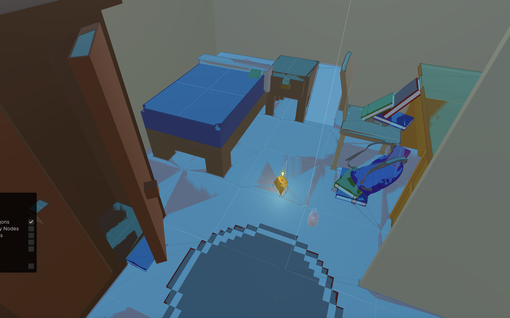
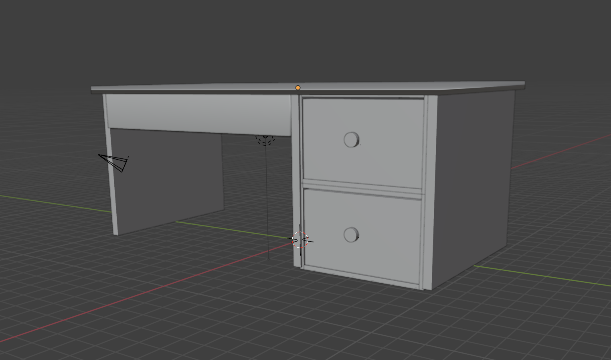
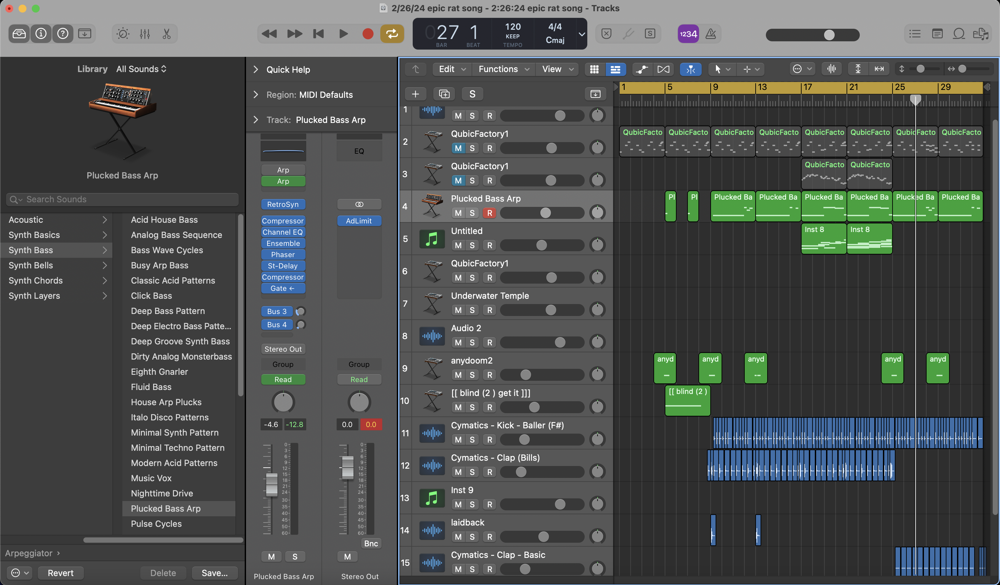

Ahh, the solo dev. It’s such a blessing and a curse. I fully understand why it's so revered by developers - you get full creative freedom in all aspects of development, from the design to the art to the music to the programming, etc. If you’re super particular and detail-oriented like me, this might seem super appealing. And if you pull it off correctly and your game is successful, you might become the next Toby Fox or Eric Barone. So in April 2024 for the Indie Game Dev jam, I decided to give it a shot.
The theme was “One Tool, Many Uses”, but I already had a silly idea bouncing around my head The idea was that you play as a tiny guy whose job is to exterminate rats in a little space. When the theme came out, I decided to shoehorn my silly idea to fit the theme. We’ll see how this turns out!
To fit the theme of “One Tool, Many Uses”, the player was gonna be equipped with a gun with, well, many uses! I had 3 modes in mind:
- Pistol mode
- Shotgun mode
- Bomb mode
Unforunately, I could only implement the first 2, but I had the code in place to handle multiple gun modes. It was a good learning experience
managing the different gun modes, as I needed to create a system that was modular enough to handle each gun’s unique behavior, while generalizing
common behavior. Here was the interface:
public interface GunModeInterface
{
//cooldown - when 0, ready to fire, when > 0, not ready
public float cooldown { get; set; }
//max value the cooldown can be (right after it fires)
public float maxCooldown { get; set; }
//function to run fire method
public abstract void fireInTheHole();
}
I had separate scripts for the pistol, shotgun, and bomb, which all inherited from GunModeInterface. This made it easy for me to generalize the cooldown behavior while still giving each gun mode freedom to program its own fire behavior. This structure may have fallen apart if I had different fire controls (for example, an automatic gun), but for now this worked.
For the rats, I wanted more of them to spawn over time, kind of like a rapid infestation. I programmed 6 spawn points around the area that would each unlock over time. I created a NavMeshAgent for the rats to follow, and I put the cheese in the middle as their target destination.
Originally, I wanted the rats to follow the player and attack the player, but when playtesting, I found that it was hard to move when there was a crowd of rats around you. So I changed the design and introduced the cheese in the middle. The rats would attack the cheese, and when the cheese ran out of health, the game ends. This allowed the player to move more freely while still having an end condition.
I deliberately tried to pick a setting where minimal modelling/texturing was needed. Creatively, I decided on a dorm room! All the furniture was done in Blender, stretching and sizing cubes and spheres in a handfisted way. Hey, I needed to get level elements fast, and I got them fast.
Admittedly, I had to grab a couple models and animations online, since by 3D skills are quite bad. The rat, the backpack, and the rat animations were all online. But everything else was me, but that isn’t saying much.
I saved the easiest and least tedious part for last - all I needed was a backing track and some SFX for the gun and rats. But I was running out of time, and I needed SFX fast.
For the backing track, I wanted something super blood-pumping, but also very cartoonish as well. As I usually do, I just cycle thru synth patches until I improvise a melody that I like. Once I had the opening melody line, I quickly assembled a simple beat with a four-on-the-floor kick and a 2-4 snare pattern to give it the driving feel. I had an aha moment when I threw in the second melody on top - it just sounded like a rat march or something, and it fit with the rest of the song perfectly. Listening back, it sounds quite thin and cheap, as I didn’t have time to mix it. But overall, I think it served its purpose.
For SFX, I decided to record everything using my mouth. I probably could have jumped on a synth or sampler and tweaked sounds until I got something, but the clock was running out - I needed SFX fast. So I recorded myself making each gun and rat noise, level-matched them and called it a day. Done.
And wow, what a crazy 48 hours! I ended up with a game I was quite satisfied with, but it was a little off-theme and the polish wasn’t great. Here’s what I took away:
You as a developer have strengths and weaknesses. Design the game such that you can showcase the parts you’re good at, while minimizing the work in other areas you’re not so good at. For me, my strengths are Music and Programming, and my weaknesses were Writing, Design, and Art. I think I designed the game smart enough to create a functional game in time, but I definitely could’ve scoped down in terms of mechanics and level design, and that would’ve saved me time.
Solo devving a 2-day game jam made me realize how much detail you can really go into some of these things. It’s ridiculous how easy it is to obsess over small details. I remember encountering an issue with the shotgun mode where if you blast a rat close range, each bullet that hit the rat will count towards a kill, which unintentionally boosted the score. This wasn’t something I could fix in time, so I had to leave it in the final game.
While I am super proud of my work, I wouldn’t say the experience was fun. Because you can’t just hole up in a single task, there are always 5 or 6 other things to do! After this was over, I decided that solo devving was not worth it for me. While the creative freedom was rewarding, it takes a special kind of discipline to not get distracted and deliver a minimum viable product on time. And that is not something I or most people have.